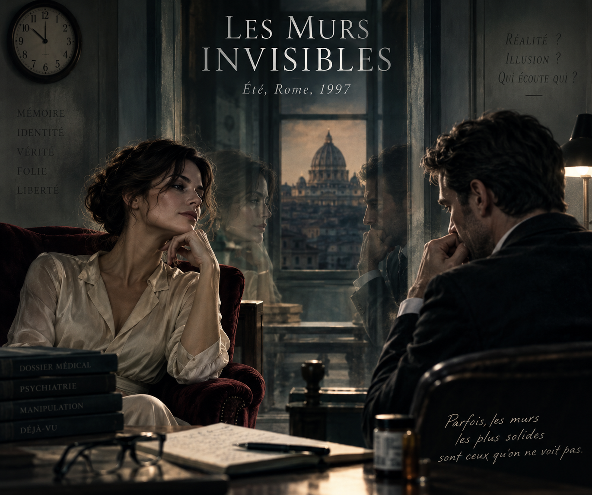
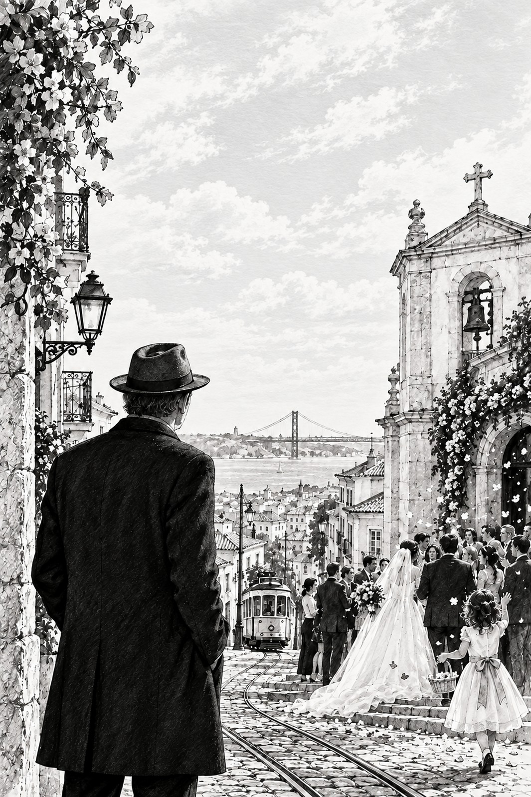
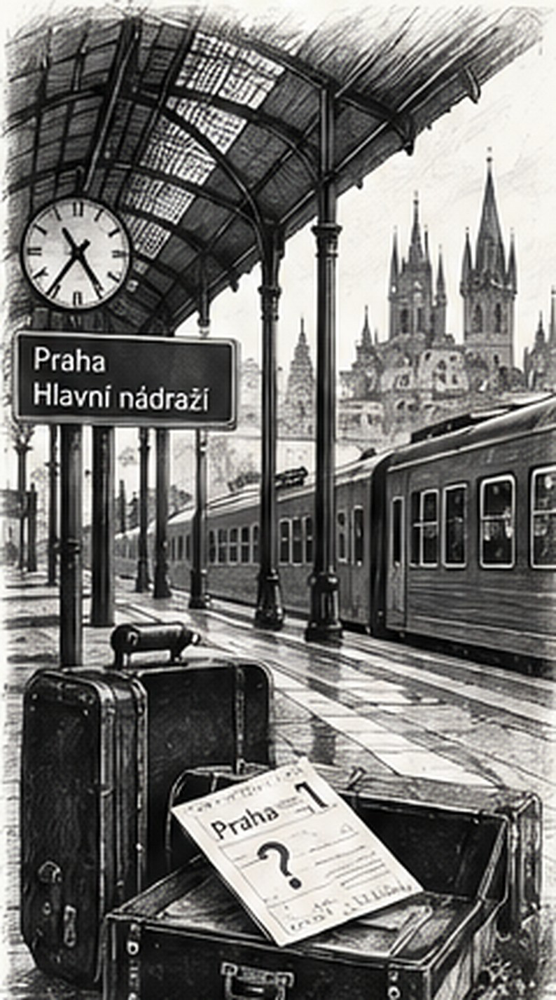
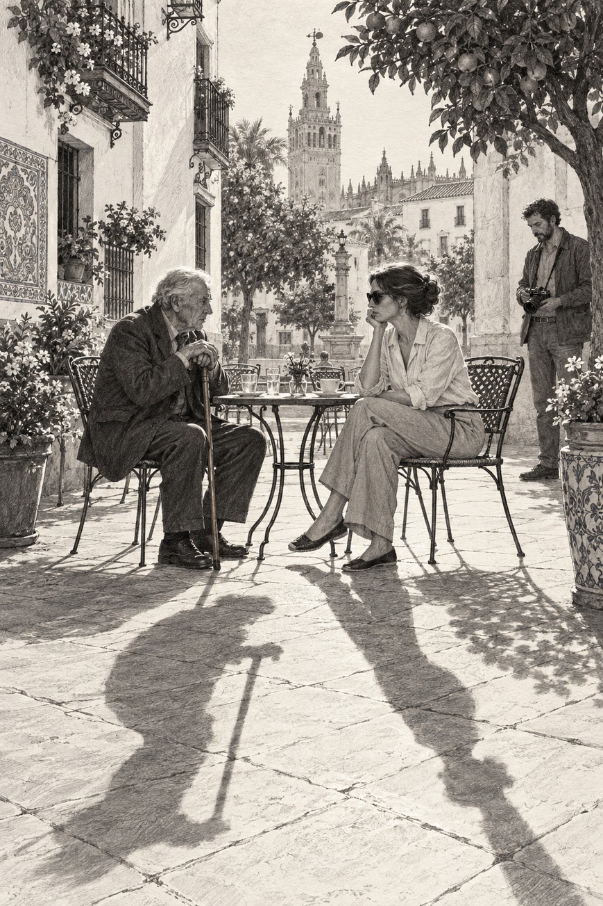
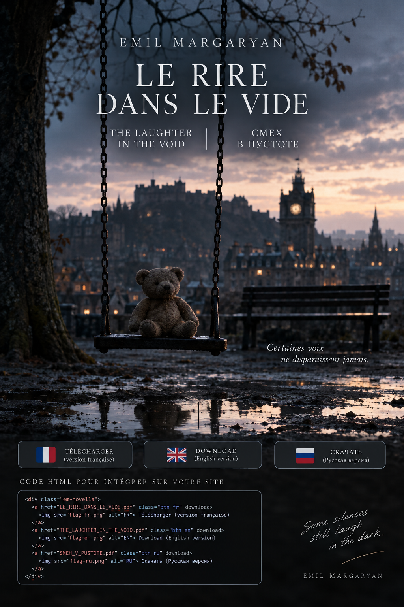
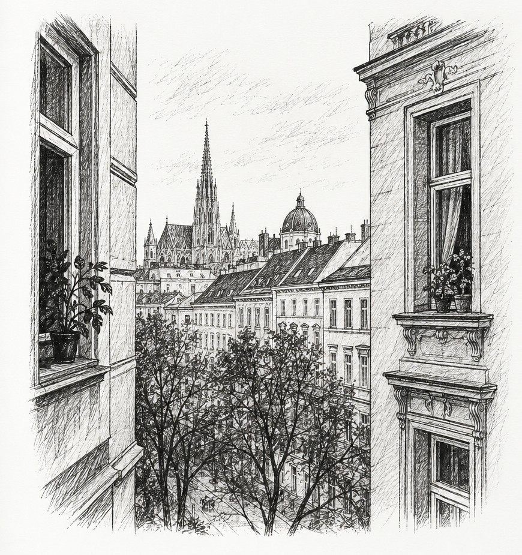
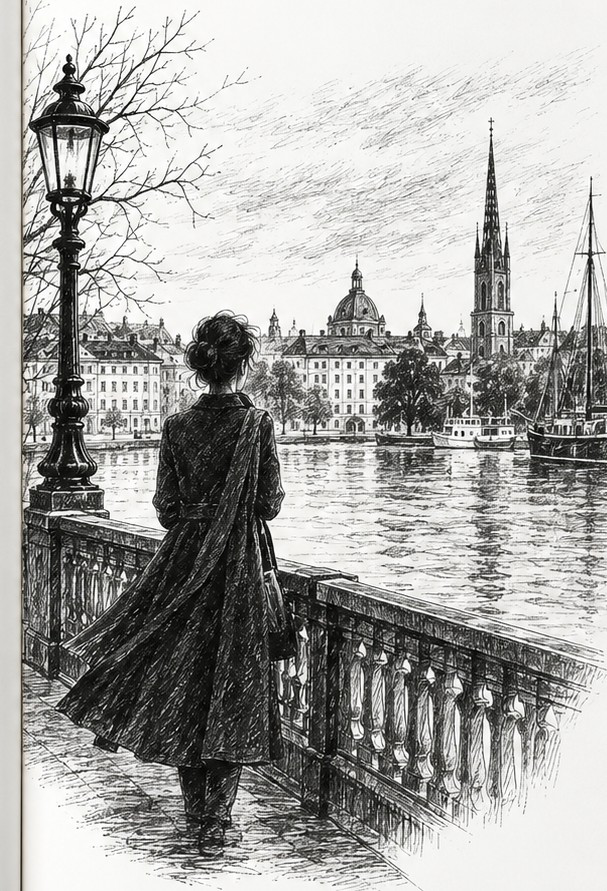

01
Невидимые стены
В Риме психиатр и его пациентка видят, как привычная реальность начинает трещать.
Читать отрывок →
ПИСАТЕЛЬ · ЛИТЕРАТУРНЫЙ ПЕРЕВОДЧИК
Рассказы о памяти, идентичности, одиночестве, душевной хрупкости, диссоциации и невидимых трещинах повседневной жизни — там, где реальность порой незаметно сдвигается в сторону странного. Новые рассказы публикуются регулярно.

ПРОИЗВЕДЕНИЯ
Познакомьтесь с двенадцатью рассказами DOUZE PORTES в коротких отрывках.
СКОРО
Двенадцать рассказов. Двенадцать дверей. Двенадцать пересекающихся судеб.
Сборник Эмиля Маргаряна скоро появится на Amazon.
В Риме психиатр и его пациентка видят, как привычная реальность начинает трещать.
Читать отрывок →
В Лиссабоне Артур годами приходит на свадьбы незнакомых людей.
Читать отрывок →
В армянской деревне один неуловимый житель каким-то образом удерживает целый мир в равновесии.
Читать отрывок →
В Женеве анонимные письма ведут Габриэля к тревожным обрывкам памяти.
Читать отрывок →Список извинений постепенно меняет представление Бернара о собственных ошибках.
Читать отрывок →
Ануш объявляет, что умрёт во вторник, и семья снова начинает собираться вместе.
Читать отрывок →
Неожиданный билет выводит Милана за пределы маршрутов, которые он знает наизусть.
Читать отрывок →
В Севилье на фотографиях Себастьена появляются тени, которые больше не совпадают с теми, кто их отбрасывает.
Читать отрывок →

В Вене двое соседей, разделённых слишком тонкой стеной, учатся слышать друг друга иначе.
Читать отрывок →
Старый печатник и угасающая память возвращают вопрос о том, что остаётся от слов.
Читать отрывок →
В Стокгольме танцовщица встречает взгляд, который постепенно меняет её отношение к самой себе.
Читать отрывок →
«Переводить, писать — значит искать то, что сохраняется, переходя из одного языка в другой, из одной памяти в другую, из одной жизни в другую.»
ПЕРЕВОДЫ
Литературный перевод — не просто перенос текста с одного языка на другой. Это способ услышать то, что слова несут в себе: эпоху, голос, память.
Французский · Армянский · Русский · Английский


ОБ АВТОРЕ
Эмиль Маргарян родился в Ереване и живёт во Франции. Его проза рождается на пересечении языков, памяти и чувства принадлежности к месту и культуре.
Он изучал французскую литературу и филологию в Армении, затем литературный перевод и межкультурную коммуникацию в Экс-ан-Провансе; сегодня он совмещает собственное литературное творчество с работой переводчика.
В своих рассказах он обращается к памяти, исчезновению, одиночеству, языку и порой абсурдным механизмам, с помощью которых человек пытается придать смысл собственному существованию.
НОВОСТИ
Здесь будут появляться самые свежие рассказы и литературные проекты.
Участие в конкурсах, отборы и литературные события.
Встречи и выступления о литературе, переводе и новых формах письма.
КОНТАКТЫ